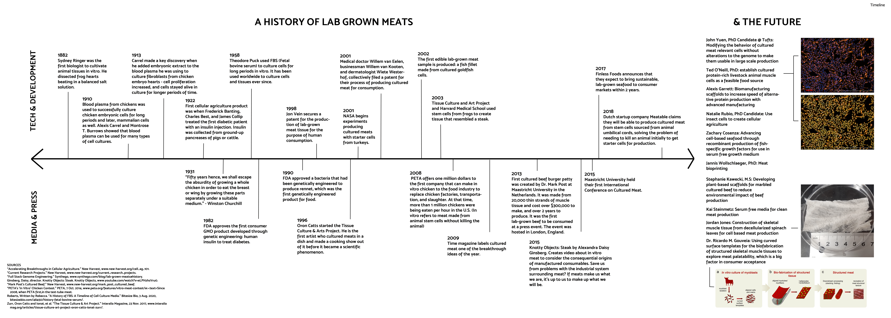

How can we create beef without cows? How can we rethink the ways we manage waste? How can we redesign our food systems to be more sustainable and conscious of the issues present within it? A speculative design project reimagining meat production through the lens of agricultural and food waste.

Livestock causes four-fifths of deforestation in the Amazon Rainforest, and cattle alone produces 6% of global greenhouse gas emissions. The American food system wastes 40% of its food — yet continues to dedicate enormous land, water, and energy resources to meat production.
Two solutions currently exist — plant-based meat and lab-grown meat — but both have significant limitations in scale, cost, and consumer acceptance. This project asks: what else is possible?
Plant-based meat relies on highly processed ingredients and often fails to replicate the nutritional profile and texture of animal protein. Lab-grown meat — cultivated from animal cells in bioreactors — is promising but currently prohibitively expensive and energy-intensive at scale.
Both alternatives still depend on agricultural inputs and don't directly address the parallel crisis of food and agricultural waste, which represents a massive untapped resource.
30% of ice-free land for livestock; 6% of global GHG from cattle; 4/5 of Amazon deforestation.
40% of American food is wasted, while vast resources are spent growing new food — including livestock feed.
Plant-based and lab-grown meats face scale, cost, and acceptance barriers that make near-term mass adoption unlikely.
The speculative proposal: growing lab-made meat from carbon and fat cells found in agricultural waste, food waste, and even plastics. Rather than requiring dedicated land and feed, this system would close the loop between what we discard and what we consume — treating waste streams as raw material for nutrition.
As a speculative design project, Redesigning Meat aims to rethink how we can consume meat in the context of environmental sustainability — not by eliminating meat, but by fundamentally changing where it comes from.
The project positions speculative design as an active participant in food systems thinking — not proposing a ready-to-build solution, but making a specific future imaginable and arguable. By grounding the proposal in real waste data and existing cellular agriculture technology, it stays just inside the boundary of the plausible.
This project sits within a broader body of work on biological and food systems design, alongside SCOBY: Experiment & Tea Bags, Heart of Valley's Delight, and The Future of Waste.